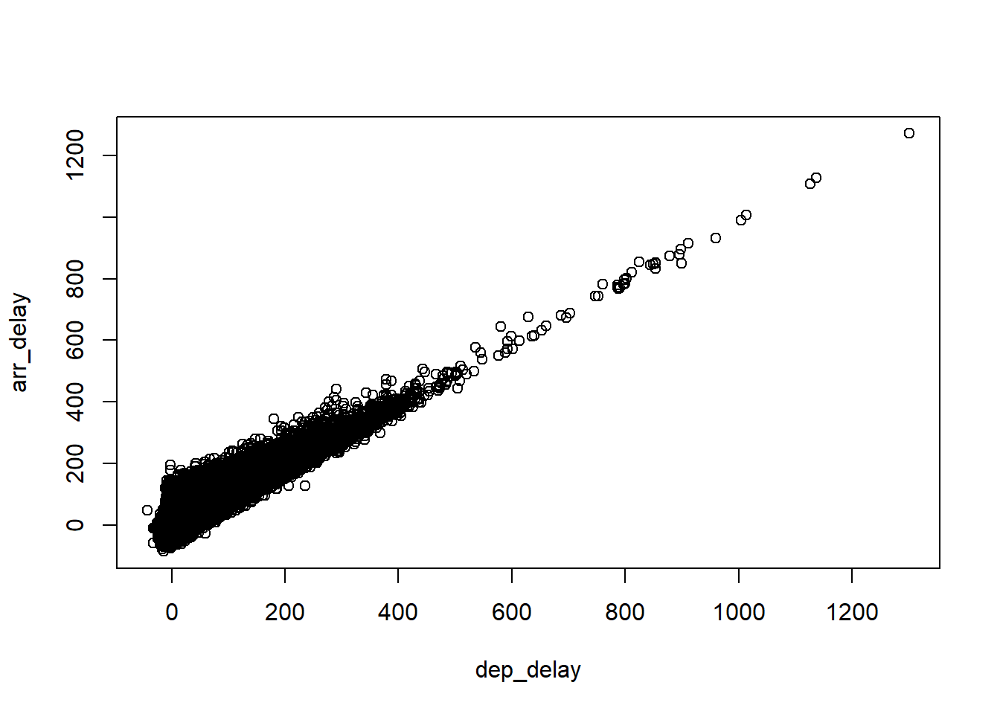
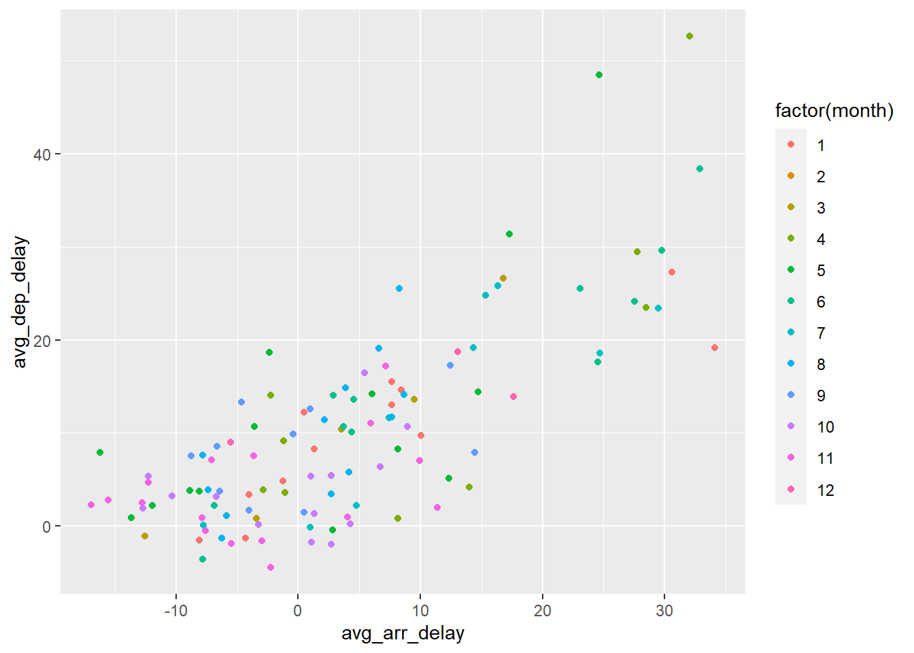

Chapter 8 Use data.table Package for Big Data
Packages are the fundamental units of reproducible R code. They include reusable R functions, the documentation that describes how to use them, and sample data. There are currently 120,000 packages in R, which empower you to do all kinds of data analysis. This huge variety of packages is one of the reasons that R is so successful: the chances are that someone has already solved a problem that you’re working on, and you can benefit from their work by downloading their package.
The data.table package in R provides an enhanced version of data.frame that allows you to do blazing fast data manipulations. The data.table package is being used in different fields such as finance and genomics which encounter large data sets (for example, 1GB to 100GB).
Why we are interested in learning data.table package among all these packages?
“The data.table package in a sense helped to ‘save’ R. At one point a few years ago, there were major concerns that R could not handle Big Data, with calls from some in favor of Python instead. The data.table package showed that R could do quite well in large datasets. This really aided in R’s being adopted by various large companies…” — Norm Matloff, Prof. of Computer Science, UC Davis
8.1 Install R Packages
There are over 120,000 packages in R. As you can imagine, it is not wise to install every package in R, which will take enormous computer storage space. In fact, when installing R, we will install the most essential packages, which are known as base R. For example, the functions learned so far are all from base R (e.g., data.frame, plot, loop, if …). Base R can perform the basic functions. But we can enhance the power of R by installing packages.
We can install R packages as needed through the following syntax:
install.packages("package_name") # download and install the package
library(package_name) # load the package into memoryThe packages are typically saved at the Comprehensive R Archive Network (CRAN); we do not need to worry about where the package is saved exactly on the Internet; R will take care of that automatically.
Let’s install the data.table package by running following code:
As you will see, downloading and installing the package takes times, especially when the package is big. Thus, I will run this code just once to install the package. Every time when you reopen your R project, you just need to load the package into your memory through the following code:
Now that you have loaded the package into the computer memory, you can use all the powerful functions from the package.
On the right bottom corner of R-studio, you should be able to examine all the packages that are installed. The packages that are checked are the ones loaded into the memory.
As said, data.table is an enhanced venison of data.frame. Thus, recall what we did in the lecture about data.frame. We will learn
how to read data file into R as data.table.
how to manipulate data.table.
We will use the flights dataset for the purpose of illustration. The flights dataset contains flights information for all the flights departing from New York City airports in 2013. This dataset is from from the Bureau of Transporation Statistics.
8.2 fread(): Read csv file into R as data.table
Remember, in read.csv() reads a dataset into R as data.frame. In comparison, fread() from data.table package will read a csv file into R as a data.table.
Now, let’s read flights.csv into R using fread() function in data.table package.
The flights.csv is 31.9MB, with 336,776 observation and 19 variables. This is not a small dataset. But as you can feel, fread() is blazing fast.
We can use the class() function to examine the type of the data.table (flights) we just created:
## [1] "data.table" "data.frame"As seen, flights belongs to both ‘data.table’ and ‘data.frame’. As mentioned, this is because data.table is an extension (enhancement of data.frame). Therefore, all functions works on data.frame all works on data.table.
Now, let’s compare the performance of data.table and data.frame in terms reading data into R. Performance benchmark between different programs is very common to determine which one is better.
## user system elapsed
## 1.34 0.09 1.44## user system elapsed
## 0.10 0.00 0.06As seen, read.csv() spends 1.42 seconds to read the data; while fread() spends 0.06 seconds to read the data. fread() is 23 times faster (this will be different depending on the machine you used). The advantage will be even prominent if we are dealing with even big file.
8.3 Quick summary of the data
In the excel file, we can easily “see” the data in the tabular format. With R-stuido, you can click “flights” on the top right corner to “see” the data. But more commonly, we will examine the data through a few quick summary:
Use head()/tail() to show the first/last 6 rows of the data.
## year month day dep_time sched_dep_time dep_delay arr_time sched_arr_time
## 1: 2013 1 1 517 515 2 830 819
## 2: 2013 1 1 533 529 4 850 830
## 3: 2013 1 1 542 540 2 923 850
## 4: 2013 1 1 544 545 -1 1004 1022
## 5: 2013 1 1 554 600 -6 812 837
## 6: 2013 1 1 554 558 -4 740 728
## arr_delay carrier flight tailnum origin dest air_time distance hour minute
## 1: 11 UA 1545 N14228 EWR IAH 227 1400 5 15
## 2: 20 UA 1714 N24211 LGA IAH 227 1416 5 29
## 3: 33 AA 1141 N619AA JFK MIA 160 1089 5 40
## 4: -18 B6 725 N804JB JFK BQN 183 1576 5 45
## 5: -25 DL 461 N668DN LGA ATL 116 762 6 0
## 6: 12 UA 1696 N39463 EWR ORD 150 719 5 58
## time_hour
## 1: 2013-01-01 05:00:00
## 2: 2013-01-01 05:00:00
## 3: 2013-01-01 05:00:00
## 4: 2013-01-01 05:00:00
## 5: 2013-01-01 06:00:00
## 6: 2013-01-01 05:00:00## year month day dep_time sched_dep_time dep_delay arr_time sched_arr_time
## 1: 2013 9 30 NA 1842 NA NA 2019
## 2: 2013 9 30 NA 1455 NA NA 1634
## 3: 2013 9 30 NA 2200 NA NA 2312
## 4: 2013 9 30 NA 1210 NA NA 1330
## 5: 2013 9 30 NA 1159 NA NA 1344
## 6: 2013 9 30 NA 840 NA NA 1020
## arr_delay carrier flight tailnum origin dest air_time distance hour minute
## 1: NA EV 5274 N740EV LGA BNA NA 764 18 42
## 2: NA 9E 3393 <NA> JFK DCA NA 213 14 55
## 3: NA 9E 3525 <NA> LGA SYR NA 198 22 0
## 4: NA MQ 3461 N535MQ LGA BNA NA 764 12 10
## 5: NA MQ 3572 N511MQ LGA CLE NA 419 11 59
## 6: NA MQ 3531 N839MQ LGA RDU NA 431 8 40
## time_hour
## 1: 2013-09-30 18:00:00
## 2: 2013-09-30 14:00:00
## 3: 2013-09-30 22:00:00
## 4: 2013-09-30 12:00:00
## 5: 2013-09-30 11:00:00
## 6: 2013-09-30 08:00:00Use summary() to get summary statistics for each variable.
## year month day dep_time sched_dep_time
## Min. :2013 Min. : 1.000 Min. : 1.00 Min. : 1 Min. : 106
## 1st Qu.:2013 1st Qu.: 4.000 1st Qu.: 8.00 1st Qu.: 907 1st Qu.: 906
## Median :2013 Median : 7.000 Median :16.00 Median :1401 Median :1359
## Mean :2013 Mean : 6.549 Mean :15.71 Mean :1349 Mean :1344
## 3rd Qu.:2013 3rd Qu.:10.000 3rd Qu.:23.00 3rd Qu.:1744 3rd Qu.:1729
## Max. :2013 Max. :12.000 Max. :31.00 Max. :2400 Max. :2359
## NA's :8255
## dep_delay arr_time sched_arr_time arr_delay
## Min. : -43.00 Min. : 1 Min. : 1 Min. : -86.000
## 1st Qu.: -5.00 1st Qu.:1104 1st Qu.:1124 1st Qu.: -17.000
## Median : -2.00 Median :1535 Median :1556 Median : -5.000
## Mean : 12.64 Mean :1502 Mean :1536 Mean : 6.895
## 3rd Qu.: 11.00 3rd Qu.:1940 3rd Qu.:1945 3rd Qu.: 14.000
## Max. :1301.00 Max. :2400 Max. :2359 Max. :1272.000
## NA's :8255 NA's :8713 NA's :9430
## carrier flight tailnum origin
## Length:336776 Min. : 1 Length:336776 Length:336776
## Class :character 1st Qu.: 553 Class :character Class :character
## Mode :character Median :1496 Mode :character Mode :character
## Mean :1972
## 3rd Qu.:3465
## Max. :8500
##
## dest air_time distance hour
## Length:336776 Min. : 20.0 Min. : 17 Min. : 1.00
## Class :character 1st Qu.: 82.0 1st Qu.: 502 1st Qu.: 9.00
## Mode :character Median :129.0 Median : 872 Median :13.00
## Mean :150.7 Mean :1040 Mean :13.18
## 3rd Qu.:192.0 3rd Qu.:1389 3rd Qu.:17.00
## Max. :695.0 Max. :4983 Max. :23.00
## NA's :9430
## minute time_hour
## Min. : 0.00 Length:336776
## 1st Qu.: 8.00 Class :character
## Median :29.00 Mode :character
## Mean :26.23
## 3rd Qu.:44.00
## Max. :59.00
## str() is THE function for examining structure of a dataset.
## Classes 'data.table' and 'data.frame': 336776 obs. of 19 variables:
## $ year : int 2013 2013 2013 2013 2013 2013 2013 2013 2013 2013 ...
## $ month : int 1 1 1 1 1 1 1 1 1 1 ...
## $ day : int 1 1 1 1 1 1 1 1 1 1 ...
## $ dep_time : int 517 533 542 544 554 554 555 557 557 558 ...
## $ sched_dep_time: int 515 529 540 545 600 558 600 600 600 600 ...
## $ dep_delay : int 2 4 2 -1 -6 -4 -5 -3 -3 -2 ...
## $ arr_time : int 830 850 923 1004 812 740 913 709 838 753 ...
## $ sched_arr_time: int 819 830 850 1022 837 728 854 723 846 745 ...
## $ arr_delay : int 11 20 33 -18 -25 12 19 -14 -8 8 ...
## $ carrier : chr "UA" "UA" "AA" "B6" ...
## $ flight : int 1545 1714 1141 725 461 1696 507 5708 79 301 ...
## $ tailnum : chr "N14228" "N24211" "N619AA" "N804JB" ...
## $ origin : chr "EWR" "LGA" "JFK" "JFK" ...
## $ dest : chr "IAH" "IAH" "MIA" "BQN" ...
## $ air_time : int 227 227 160 183 116 150 158 53 140 138 ...
## $ distance : int 1400 1416 1089 1576 762 719 1065 229 944 733 ...
## $ hour : int 5 5 5 5 6 5 6 6 6 6 ...
## $ minute : int 15 29 40 45 0 58 0 0 0 0 ...
## $ time_hour : chr "2013-01-01 05:00:00" "2013-01-01 05:00:00" "2013-01-01 05:00:00" "2013-01-01 05:00:00" ...
## - attr(*, ".internal.selfref")=<externalptr>8.4 Data Manipulation with data.table
In many cases, we need to inquiry and subset a dataset. Structured Query Language (SQL) is designed for that purpose. data.table syntax is actually very similar to the SQL syntax.
data.table provides a simple, consistent, user-friendly syntax for data manipulation. The general form of data.table syntax is:
DT[i, j, by]
where
DT is a data.table.
by: grouped by what?
j: what to do?
i: on which rows?
We will apply this form to manipulate data: Filtering rows, selecting columns, aggregating, … # # Filtering Rows Here we show how to filter particular rows with data.table.
8.4.1 Filtering rows through logical expression
We can filter rows based on logical expression. E.g.,
# filtering flights with "JFK" as the origin in the month of June.
tmp <- flights[origin == "JFK" & month == 6]
head(tmp)## year month day dep_time sched_dep_time dep_delay arr_time sched_arr_time
## 1: 2013 6 1 2 2359 3 341 350
## 2: 2013 6 1 538 545 -7 925 922
## 3: 2013 6 1 539 540 -1 832 840
## 4: 2013 6 1 553 600 -7 700 711
## 5: 2013 6 1 554 600 -6 851 908
## 6: 2013 6 1 557 600 -3 934 942
## arr_delay carrier flight tailnum origin dest air_time distance hour minute
## 1: -9 B6 739 N618JB JFK PSE 200 1617 23 59
## 2: 3 B6 725 N806JB JFK BQN 203 1576 5 45
## 3: -8 AA 701 N5EAAA JFK MIA 140 1089 5 40
## 4: -11 EV 5716 N835AS JFK IAD 42 228 6 0
## 5: -17 UA 1159 N33132 JFK LAX 330 2475 6 0
## 6: -8 B6 715 N766JB JFK SJU 198 1598 6 0
## time_hour
## 1: 2013-06-01 23:00:00
## 2: 2013-06-01 05:00:00
## 3: 2013-06-01 05:00:00
## 4: 2013-06-01 06:00:00
## 5: 2013-06-01 06:00:00
## 6: 2013-06-01 06:00:00As see, this is much clear and easy to read compared to the syntax under data.frame; and we do not need to write flights$origin, flights$month as we did in data.frame.
8.4.2 Filtering rows by row index
We can also filter rows by index. E.g.,
## year month day dep_time sched_dep_time dep_delay arr_time sched_arr_time
## 1: 2013 1 1 517 515 2 830 819
## 2: 2013 1 1 533 529 4 850 830
## arr_delay carrier flight tailnum origin dest air_time distance hour minute
## 1: 11 UA 1545 N14228 EWR IAH 227 1400 5 15
## 2: 20 UA 1714 N24211 LGA IAH 227 1416 5 29
## time_hour
## 1: 2013-01-01 05:00:00
## 2: 2013-01-01 05:00:00In data.table, .N is a special symbol that contains the number of rows of the data.table. E.g.,
## year month day dep_time sched_dep_time dep_delay arr_time sched_arr_time
## 1: 2013 9 30 NA 840 NA NA 1020
## arr_delay carrier flight tailnum origin dest air_time distance hour minute
## 1: NA MQ 3531 N839MQ LGA RDU NA 431 8 40
## time_hour
## 1: 2013-09-30 08:00:00## year month day dep_time sched_dep_time dep_delay arr_time sched_arr_time
## 1: 2013 9 30 NA 840 NA NA 1020
## arr_delay carrier flight tailnum origin dest air_time distance hour minute
## 1: NA MQ 3531 N839MQ LGA RDU NA 431 8 40
## time_hour
## 1: 2013-09-30 08:00:008.4.3 Fitering rows through %between%, %chin%, %like%
%between% allows you to search for numerical values in the closed interval [val1, val2]. The syntax is: numeric_col %between% c(val1, val2)
# filtering all flights with arr_delay between 120 to 180 minutes
tmp=flights[arr_delay%between% c(120, 180)]
head(tmp)## year month day dep_time sched_dep_time dep_delay arr_time sched_arr_time
## 1: 2013 1 1 811 630 101 1047 830
## 2: 2013 1 1 957 733 144 1056 853
## 3: 2013 1 1 1114 900 134 1447 1222
## 4: 2013 1 1 1505 1310 115 1638 1431
## 5: 2013 1 1 1525 1340 105 1831 1626
## 6: 2013 1 1 1549 1445 64 1912 1656
## arr_delay carrier flight tailnum origin dest air_time distance hour minute
## 1: 137 MQ 4576 N531MQ LGA CLT 118 544 6 30
## 2: 123 UA 856 N534UA EWR BOS 37 200 7 33
## 3: 145 UA 1086 N76502 LGA IAH 248 1416 9 0
## 4: 127 EV 4497 N17984 EWR RIC 63 277 13 10
## 5: 125 B6 525 N231JB EWR MCO 152 937 13 40
## 6: 136 EV 4181 N21197 EWR MCI 234 1092 14 45
## time_hour
## 1: 2013-01-01 06:00:00
## 2: 2013-01-01 07:00:00
## 3: 2013-01-01 09:00:00
## 4: 2013-01-01 13:00:00
## 5: 2013-01-01 13:00:00
## 6: 2013-01-01 14:00:00%chin% is only for character vectors, it allows you to filter rows with character values in a set: character_col %chin% c(“val1”, “val2”, “val3”)
# Filtering flights with "JFK" or "LGA" as origin in the month of May
tmp <- flights[origin %chin% c("JFK","LGA") & month==5]
head(tmp)## year month day dep_time sched_dep_time dep_delay arr_time sched_arr_time
## 1: 2013 5 1 9 1655 434 308 2020
## 2: 2013 5 1 537 540 -3 836 840
## 3: 2013 5 1 544 545 -1 818 827
## 4: 2013 5 1 548 600 -12 831 854
## 5: 2013 5 1 549 600 -11 804 810
## 6: 2013 5 1 553 600 -7 700 712
## arr_delay carrier flight tailnum origin dest air_time distance hour minute
## 1: 408 VX 413 N628VA JFK LAX 341 2475 16 55
## 2: -4 AA 701 N5BYAA JFK MIA 144 1089 5 40
## 3: -9 UA 450 N494UA LGA IAH 190 1416 5 45
## 4: -23 B6 371 N523JB LGA FLL 140 1076 6 0
## 5: -6 MQ 4650 N520MQ LGA ATL 113 762 6 0
## 6: -12 EV 5747 N877AS LGA IAD 48 229 6 0
## time_hour
## 1: 2013-05-01 16:00:00
## 2: 2013-05-01 05:00:00
## 3: 2013-05-01 05:00:00
## 4: 2013-05-01 06:00:00
## 5: 2013-05-01 06:00:00
## 6: 2013-05-01 06:00:00%like% allows you to search for a pattern in a character or a factor vector. It is best to illustrate what pattern means with an example. E.g., the two characters “AA” and “AS” (acronym for American Airline and Alaska Airlines) are both started with a upper case U. This is called a pattern. In R, “^A” is used to denoted this pattern. We will talk more about pattern when we deal with strings.
## year month day dep_time sched_dep_time dep_delay arr_time sched_arr_time
## 1: 2013 1 1 542 540 2 923 850
## 2: 2013 1 1 558 600 -2 753 745
## 3: 2013 1 1 559 600 -1 941 910
## 4: 2013 1 1 606 610 -4 858 910
## 5: 2013 1 1 623 610 13 920 915
## 6: 2013 1 1 628 630 -2 1137 1140
## arr_delay carrier flight tailnum origin dest air_time distance hour minute
## 1: 33 AA 1141 N619AA JFK MIA 160 1089 5 40
## 2: 8 AA 301 N3ALAA LGA ORD 138 733 6 0
## 3: 31 AA 707 N3DUAA LGA DFW 257 1389 6 0
## 4: -12 AA 1895 N633AA EWR MIA 152 1085 6 10
## 5: 5 AA 1837 N3EMAA LGA MIA 153 1096 6 10
## 6: -3 AA 413 N3BAAA JFK SJU 192 1598 6 30
## time_hour
## 1: 2013-01-01 05:00:00
## 2: 2013-01-01 06:00:00
## 3: 2013-01-01 06:00:00
## 4: 2013-01-01 06:00:00
## 5: 2013-01-01 06:00:00
## 6: 2013-01-01 06:00:008.5 Select Columns
The general form of data.table syntax is:
DT[i, j, by]
where
by: grouped by what?
j: what to do?
i: on which rows?
The second argument j is used to select (and compute on) columns.
8.5.1 Using column names to select columns
Because data.table is an enhanced data.frame, we can select columns by column names in accordance with data.frame.
# Select dep_delay and arr_delay column
tmp <- flights[, c("dep_delay","arr_delay")]
# show the first 6 rows using head() function.
head(tmp) ## dep_delay arr_delay
## 1: 2 11
## 2: 4 20
## 3: 2 33
## 4: -1 -18
## 5: -6 -25
## 6: -4 12 The plot shows that there is a strong linear relationship between dep_delay and arr_delay, which essentially means: if you deptures late by x minutes, you are very likely to arrive later by x minutes.
Note that, as seen in flights[, c(“dep_delay”,“arr_delay”)], although we do not filter on rows, we need to include “,” to add a place holder for argument i. Otherwise, the code will generate an error msg.
We can also select column based on the column index, which, however, is not strongly not recommended.
This is not recommended because if the order of columns changes (which is likely to happen if you are deleting or adding columns), the result will be wrong.
We can also deselecting columns: -c(“col1”, “col2”) deselects the columns col1 and col2; in other words, delete col1 and col2.
8.5.2 Select columns as variables - the data.table way
In data.table, each column is treated as a variable, thus, you can use a list of variables (column names) to select columns.
The difference of this code and the above code is that dep_delay and arr_delay are not inside "". This is because dep_delay and arr_delay are treated as variable, rather column names.
.() is an alias to list(), for convenience. We can use .() to replace list(). This reduces typing and allows you to focus on the variables that are selected when reading the code.
We can also rename the column while selecting the column. E.g., the following code select arr_delay and dep_delay and rename to arrive_delay and depart_delay
## arrive_delay depart_delay
## 1: 11 2
## 2: 20 4
## 3: 33 2
## 4: -18 -1
## 5: -25 -6
## 6: 12 -48.5.3 Computing on columns
Since columns in data.table can be referred to as variables, you can compute directly on them in j. We will find this is a quick and easy way to get summary statistics from the data.
E.g., you want to know the average arr_delay and dep_delay of all the fligths? in other words, you want to compute the mean of arr_delay and dep_delay.
## [1] NA## [1] 6.895377We can also rename the calculated columns:
# calcuate the mean arr_delay and dep_delay
flights[,.(mean(arr_delay, na.rm = TRUE), mean(dep_delay, na.rm = TRUE))]## V1 V2
## 1: 6.895377 12.63907You can compute and name multiple variables at the same time:
# calcuate the mean arr_delay and dep_delay
flights[,.(avg_arr_delay=mean(arr_delay, na.rm = TRUE), avg_dep_delay=mean(dep_delay, na.rm = TRUE))]## avg_arr_delay avg_dep_delay
## 1: 6.895377 12.639078.5.4 Computing on rows and columns
Combining i and j is straightforward. E.g., you want to compute the average arr_deply and dep_deply for all flights origined from “JFK” in the month of Jun
flights[origin=="JFK" & month==6,.(avg_arr_delay=mean(arr_delay, na.rm = TRUE), avg_dep_delay=mean(dep_delay, na.rm = TRUE))]## avg_arr_delay avg_dep_delay
## 1: 17.59693 20.49973Now, let break this code to understand how it works. We first subset in i to find matching row indices where origin airport equals “JFK”, and month equals 6; next we look at j and select the two columns and compute their mean(). Note that the code will return a data.table.
8.5.5 Special symbol .N in j
Remember .N denotes the number of rows. .N can be used in j as well. It is particularly useful to get the number of rows after filtering in i.
E.g., you want to compute how many flights are delayed (i.e., arr_delay + dep_delay>0).
## [1] 135059In the above code, the data.table is first filtered by arr_delay + dep_delay<=0, and then compute the number of selected rows.
8.5.6 Advanced Computation on columns
Because the columns can be treated as variable in data.table, thus we can perform complex calculation on these variable in j.
E.g., we want to compute the average speed of all flights, where speed is measured by distance/(airm_time/60) (miles per hour)?
## miles_per_hr
## 1: 394.27378.5.7 Sort Data by One/Multiple Columns
The data.table has very simple syntax to sort data based on one/multiple columns. E.g., sort flights first by origin in ascending order, and then by dest in descending order
## year month day dep_time sched_dep_time dep_delay arr_time sched_arr_time
## 1: 2013 1 2 905 822 43 1313 1045
## 2: 2013 1 3 848 850 -2 1149 1113
## 3: 2013 1 4 901 850 11 1120 1113
## 4: 2013 1 6 843 848 -5 1053 1111
## 5: 2013 1 7 858 850 8 1105 1113
## 6: 2013 1 8 847 850 -3 1116 1113
## arr_delay carrier flight tailnum origin dest air_time distance hour minute
## 1: NA EV 4140 N15912 EWR XNA NA 1131 8 22
## 2: 36 EV 4125 N21129 EWR XNA 196 1131 8 50
## 3: 7 EV 4125 N16178 EWR XNA 168 1131 8 50
## 4: -18 EV 4625 N12172 EWR XNA 174 1131 8 48
## 5: -8 EV 4125 N13118 EWR XNA 163 1131 8 50
## 6: 3 EV 4125 N14180 EWR XNA 177 1131 8 50
## time_hour
## 1: 2013-01-02 08:00:00
## 2: 2013-01-03 08:00:00
## 3: 2013-01-04 08:00:00
## 4: 2013-01-06 08:00:00
## 5: 2013-01-07 08:00:00
## 6: 2013-01-08 08:00:008.6 Calcuation by Group
We’ve already seen i and j from data.table’s general form. Here, we’ll see how they can be combined together with “by” to perform operations by group.
E.g., how can we get the number of flights corresponding to each origin airport?
## origin count
## 1: EWR 120835
## 2: LGA 104662
## 3: JFK 111279e.g., How can we get the total number of flights and average arrival delay and std deviation of arrial delay for each origin, dest pair for carrier code “AA”?
tmp<-flights[carrier == "AA", .(count=.N, avg_arr_delay=mean(arr_delay, na.rm = TRUE), sd_arr_delay=sd(arr_delay, na.rm = TRUE)), by = .(origin, dest)]
head(tmp)## origin dest count avg_arr_delay sd_arr_delay
## 1: JFK MIA 2221 -3.23122440 36.81734
## 2: LGA ORD 5694 -1.31396831 41.07306
## 3: LGA DFW 4836 -1.18901523 39.21697
## 4: EWR MIA 1068 0.06332703 54.78252
## 5: LGA MIA 3945 -1.64248971 37.45564
## 6: JFK SJU 1099 -0.77603687 37.28137From this summary, we can see that AA on average arrive on time. However, the high std deviation means there is great variation in terms of the arrive delay.
How can we get the average arrival and departure delay for each origin, dest pair for each month for carrier code “AA”?
tmp=flights[carrier == "AA", .(avg_arr_delay=mean(arr_delay), avg_dep_delay=mean(dep_delay)), by = .(origin, dest, month)]
# plot the avg_arr_delay, avg_dep_delay and use color to mark different month
library(ggplot2)
ggplot(tmp,aes(avg_arr_delay, avg_dep_delay, color=factor(month)))+
geom_point()## Warning: Removed 151 rows containing missing values (geom_point). The data.table summary and the plot together provide a great way to visualize which month are more likely to have flights delay.
Note that, the above code retain the original ordering of origin-dest pair. There are cases when preserving the original order is essential. However, if we want to automatically sort by the variables in our grouping, we can simply change by to “keyby”
# sort by origin, dest, month
tmp <- flights[carrier == "AA", .(avg_arr_delay=mean(arr_delay, na.rm = TRUE), avg_dep_delay=mean(dep_delay, na.rm = TRUE)), keyby = .(origin, dest, month)]
head(tmp)## origin dest month avg_arr_delay avg_dep_delay
## 1: EWR DFW 1 8.042945 9.587879
## 2: EWR DFW 2 8.222222 11.855172
## 3: EWR DFW 3 1.113095 16.035503
## 4: EWR DFW 4 13.067485 16.713415
## 5: EWR DFW 5 -6.158537 10.053571
## 6: EWR DFW 6 4.148148 18.153374Notice that, the datatable is ordered based on variables in our grouping (origin-dest-month). This is easy for reader to examine the the pattern in our data in a tabular form.
8.7 Summary
R has currently 120,000 packages, which can enhance the power of base R. data.table is a enhanced verison of data.frame to handle big data.
Learn how to install and load R packages.
data.table syntax: DT[i, j, by]: by - grouped by what; j - what to do; i - on which rows.
use data.table syntax to manipulate the flights dataset: filtering rows, selecting columns; computing columns; aggregrating by group.